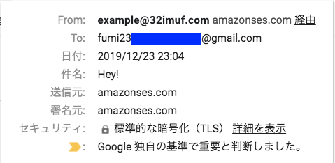
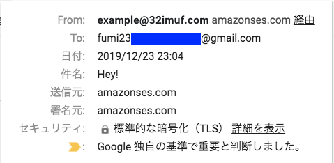

リファレンス/ガイド
Amazon SES とは: https://docs.aws.amazon.com/ja_jp/ses/latest/DeveloperGuide/Welcome.html
Amazon SES クイック スタート: https://docs.aws.amazon.com/ja_jp/ses/latest/DeveloperGuide/quick-start.html
説明
Amazon SES (Amazon Simple Email Service)
Amazon SES は、ユーザー自身の E メールアドレスとドメインを使用して E メールを送受信するための、簡単で費用効率の高い方法を提供する E メールプラットフォームです。
導入
1. ドメイン検証
AWS リージョンごとに「ドメイン検証」が必要
「E メールアドレスの検証」 or 「ドメイン検証」 のいずれかを行う必要がある
ドメインごと検証すると、そのドメインのすべての E メールアドレスを検証することになるため、そのドメインの E メールアドレスを個別に検証する必要がない
検証対象のドメインが Route 53 の DNS サービスを使用していて、Route 53 用の同じアカウントで AWS マネジメントコンソール にサインインしている場合、 Amazon SES コンソール内からすぐに DNS サーバーを更新できるらしい (わたしは別の DNS プロバイダーでやった)
やりかた
-
このガイドのとおりにやれば、とくにハマることもなくできる
Amazon SES でのドメインの検証: https://docs.aws.amazon.com/ja_jp/ses/latest/DeveloperGuide/verify-domains.html
Amazon SES でのドメインの検証: https://docs.aws.amazon.com/ja_jp/ses/latest/DeveloperGuide/verify-domain-procedure.html
-
検証が完了すると、
Amazon SES コンソールでのドメインのステータスが「pending verification (検証中)」から「verified (検証済み)」に変わり、
Amazon SES から通知 E メールが届く
-
Amazon SES コンソールの「Send a Test Email」からテストメールを送信できる (こんな感じ↓)
 

2. DKIM を使った E メールの認証
-
DKIM: ドメインキーアイデンティファイドメール
送信者が暗号化キーで E メールメッセージを署名できる規格
E メールプロバイダーはこの署名を使用して、メッセージが転送中に第三者によって改ざんされていないことを検証します。
詳しくは、 http://dkim.org/ に書いてあるそうです
Amazon SES における DKIM を使った E メールの認証: https://docs.aws.amazon.com/ja_jp/ses/latest/DeveloperGuide/dkim.html
-
Amazon SES の Easy DKIM: https://docs.aws.amazon.com/ja_jp/ses/latest/DeveloperGuide/easy-dkim.html
「送信元」アドレスで使用するドメインでのみ Easy DKIM 設定が必要
リージョンごとに Easy DKIM 設定が必要
やりかた
-
このガイドのとおりにやれば、とくにハマることもなくできる
ドメインにおける Easy DKIM のセットアップ: https://docs.aws.amazon.com/ja_jp/ses/latest/DeveloperGuide/easy-dkim-setup-domain.html
-
検証が完了すると、
Amazon SES コンソールでのドメインのステータスが「pending verification (検証中)」から「verified (検証済み)」に変わり、
Amazon SES から通知 E メールが届く
-
Amazon SES コンソールの「Send a Test Email」からテストメールを送信できる (Easy DKIM セットアップ前となんだかちょっと違う)